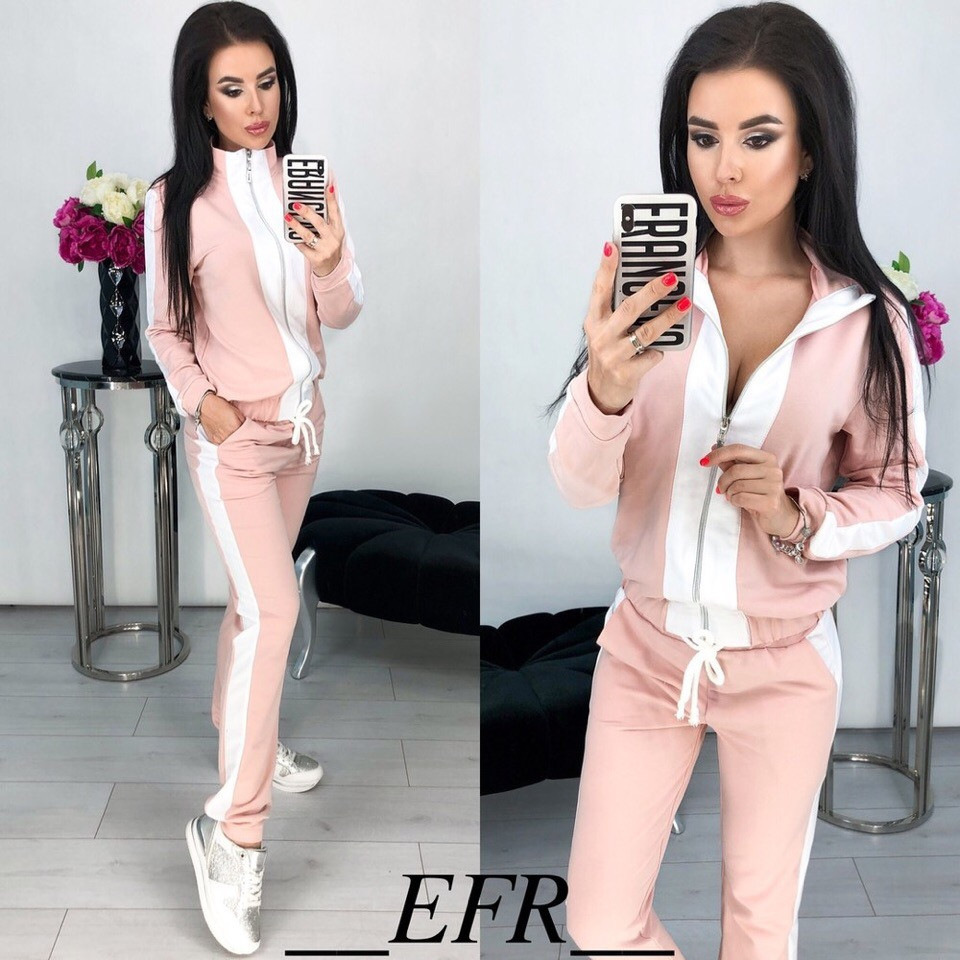

на главную
КОСТЮМ Y1091 ПЕРСИКОВЫЙ

Описание:
Женский спортивный костюм состоящий из кофты и штанов.
Кофта на замке ,манжеты внизу и на рукавах.
По бокам карманы.
Воротник стойкой.
Штаны на резинке в поясе, в пояс вдет шнурок.
По бокам карманы.. Внизу штанин манжета. Ткань не тонкая.
Сезон: весна/осень
Состав: 90% хлопок 10% пэ
Уход: стирка при 30°
Импортер в РБ:.ИП Гапоник К. Г. УНП 590935048, Республика Беларусь, 230024, г. Гродно, ул. Поповича, д. 15а кв. 20.
Производитель: ООО "Виво", г. Краснодар, Краснодарский край, ул. Селезнева 204, Россия.
Страна производства: Россия.
Срок службы: не ограничен. Изделия должны храниться в крытых складских помещениях и быть защищены от прямого попадания солнечных лучей и атмосферных воздействий.
Все права защищены